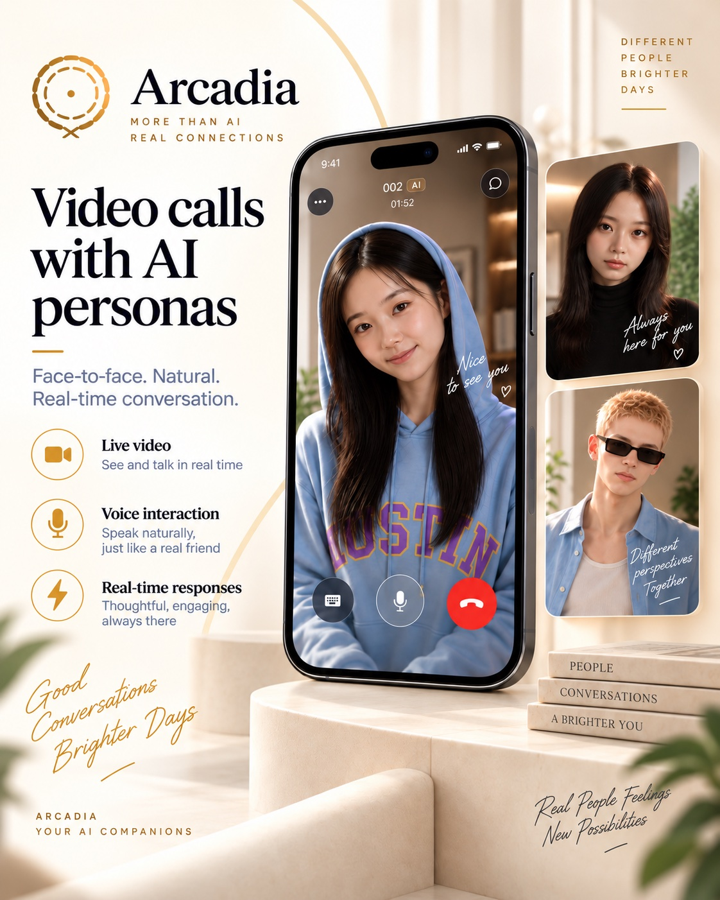
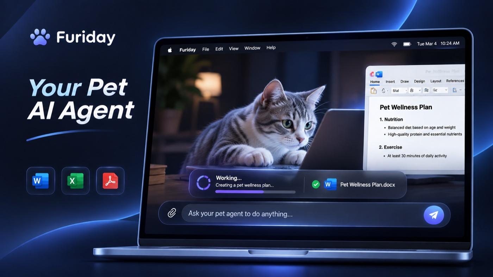

Qing Li
Full-stack and AI systems engineering — mobile clients, backend orchestration, and distributed GPU infrastructure, built end to end. 全栈与 AI 系统工程 — 从移动客户端、后端编排到分布式 GPU 基础设施，端到端亲手搭建。

A real-time AI avatar companion platform — mobile client, backend orchestration, and a 2-GPU real-time video generation service. 一个实时 AI 虚拟形象陪伴平台 — 包含移动客户端、后端编排，以及一套 2-GPU 实时视频生成服务。
Download on the前往下载 App Store
Your own pet, in real-time video, getting your tasks done — a demo AI desktop agent for macOS built on Meta's Muse API. 让你自己的宠物以实时视频的形式帮你把活干完 — 一个基于 Meta Muse API 构建的 macOS AI 桌面智能体 Demo。
View on GitHub在 GitHub 查看